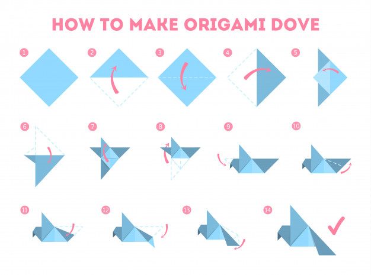

Step 1: Start with a square piece of origami paper. If you only have regular 8.5x11 paper, follow these instructions to make a square sheet. You can also use these colorful Printable Origami Paper.
Step 2: Fold the paper in half by folding the top corner to the bottom corner. You should have an upside down triangle.
Step 3: Fold part of the top down so that the edge is about halfway down. Don't make this flap too thin because this will become the wings.
Step 4: Turn the paper over.
Step 5: Take the bottom corner of the top layer and fold it up like this.
Step 6: Fold the figure in half by folding the left side over to the right.
Step 7: Now fold that same flap back like this to make one of the wings.
Step 8: Fold the other wing back also.
Step 9: Push the center of the head in and flatten. This is called an inside reverse fold.
Step 10: And tada! You have yourself a bird. Now set it free! Just kidding. Don't throw it in the air. It will just fall down and you'll be disappointed.
